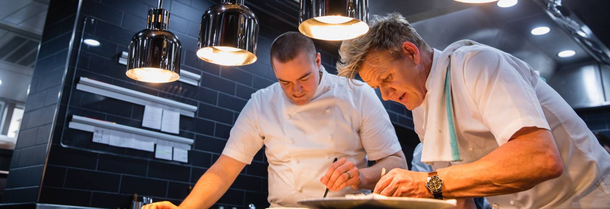
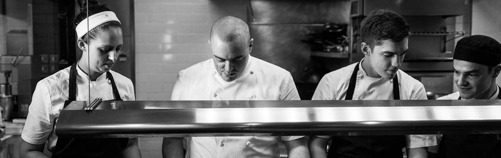

Have you ever wondered what it takes to run a three Michelin-starred kitchen? Or what it's like to dine at the famous Inspiration Table? Here we give you an insight into this fascinating world of exquisite dining, fine wines, and exceptional service. Welcome to Restaurant Gordon Ramsay. |
 |
Holding three Michelin-stars, Gordon Ramsay’s flagship restaurant provides elegant modern French cuisine using the finest seasonal ingredients and employing both classic and modern techniques. |
 |
The Philosophy of A Restaurant From A Renown Chef |
|
Restaurant Gordon Ramsay Location => |